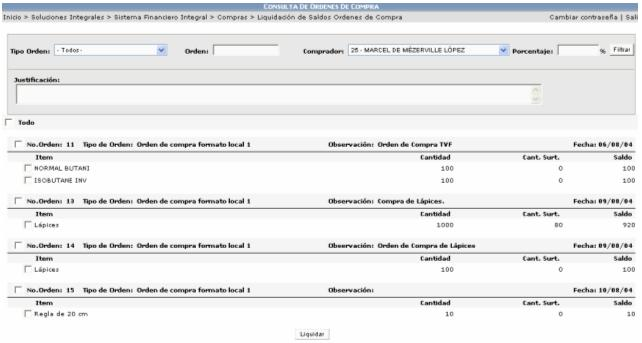
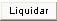

El proceso de liquidación de saldos consiste en eliminar saldos de las órdenes de compra que han sido generados por procesos de conversión en las unidades de medida.
Por ejemplo si se solicita la compra de 3 litros de aceite y el proveedor cotiza 1 galón, al hacer la conversión de galones a litros, pueden quedar centésimas de diferencia. Estos son los saldos que se deben limpiar.

Si alguna orden tiene en la columna Cant. Surt, un valor diferente de cero (0), se selecciona el ítem de dicha orden y se presiona el botón de

para proceder a limpiar saldos.
Además se debe de especificar una justificación del porque se están limpiando dichos saldos.